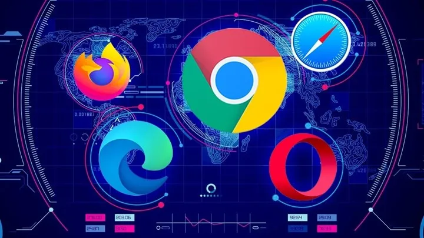

Masaüstünde ve mobilde en popüler internet tarayıcıları belli oldu
Nisan 2024 itibarıyla en çok kullanılan web tarayıcıları belli oldu. Statcounter'ın son raporuna göre Google
Chrome, masaüstünde de mobilde de en popüler internet tarayıcısı oldu.

Statcounter, internet tarayıcılara ilişkin Nisan 2024 raporunu yayınladı. Rapora göre Microsoft Edge, yavaş
yavaş kullanıcı sayısını artırıyor ancak pazar payı olarak Google Chrome’un hâlâ birkaç ışık yılı gerisinde.
İşte bilgisayarda ve mobilde en çok kullanılan web tarayıcılar:
En çok kullanılan web tarayıcıları (masaüstü)
Google Chrome (%65.93)
Microsoft Edge (%12.81)
Safari (%8.45)
Firefox (%6.67)
Opera (%3.09)
Dünyanın en popüler tarayıcısı Google Chrome, şu anda %65.93 pazar payına sahip. Nisan 2024’te pazar payında az
da olsa bir artış olduğu görülüyor. Google, Windows’ta Chrome’un ARM64 sürümünü yayınlayarak ARM işlemcili yeni
nesil Windows 11 bilgisayar satın almayı düşünenleri de kendine bağlamış oldu. Chrome’u Microsoft’un tarayıcısı
takip ediyor. Microsoft Edge, şu anda %12.81 pazar payına sahip. Hatırlatma açısından, Edge, Ocak 2024’te %12.96
ile tüm zamanların en yüksek pazar payına ulaşmıştı.
Microsoft Edge’i Apple’ın tarayıcısı Safari takip ediyor. Safari, %8.45 ile masaüstünde en popüler üçüncü
tarayıcı konumunda. Safari’yi %6.67 pazar payıyla Firefox takip ediyor. %3.09 pazar payıyla Opera, en çok
kullanılan tarayıcılar listesinde beşinci konumda. Peki, mobilde durum nasıl?
En popüler internet tarayıcıları (mobil)
Google Chrome (%65.67)
Safari (%23.77)
Samsung Internet (%4.33)
Opera (%2.17)
UC Browser (%1.43)
Google Chrome, akıllı telefon ve tabletlerde de en çok kullanılan internet tarayıcısı. Ardından Safari, Samsung
Internet, Opera ve UC Browser geliyor. Microsoft Edge’in mobil sürümü kullanıcılar tarafından neredeyse hiç
tercih edilmiyor; %0.39 pazar payıyla 9. sırada.